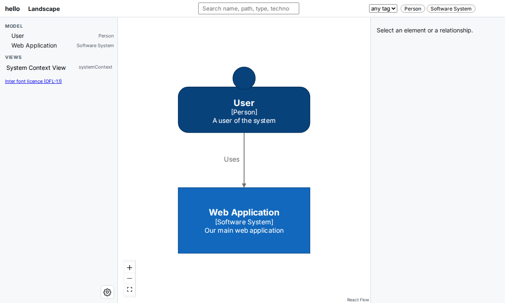
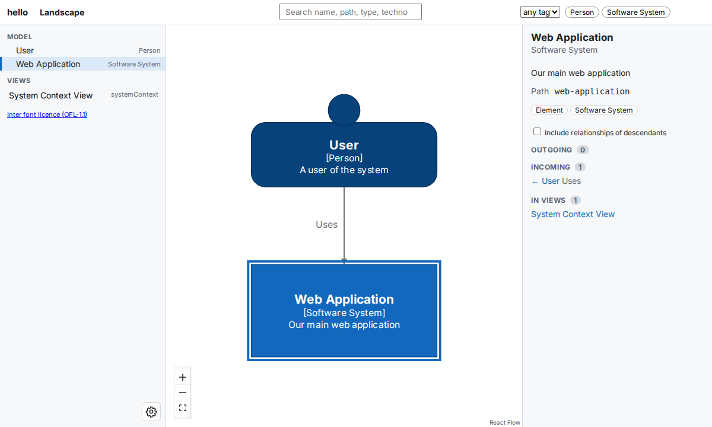
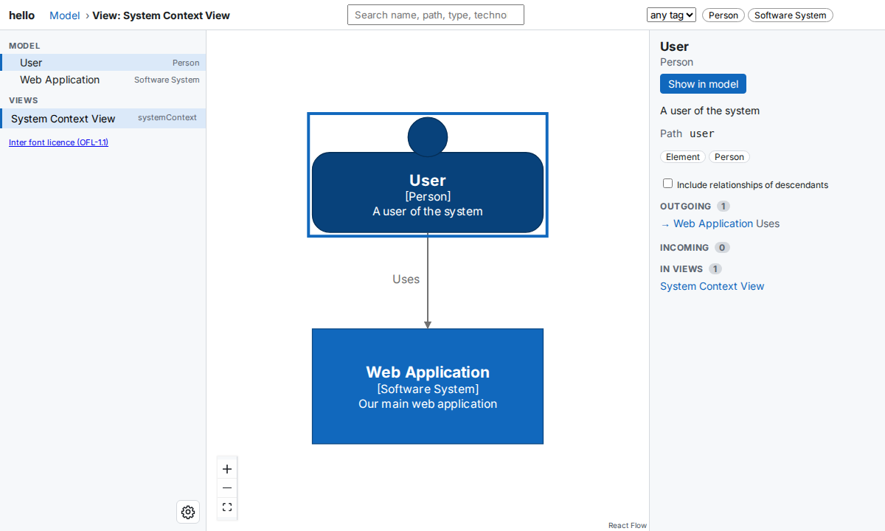

Quick Start¶
In this tutorial, you describe a small software system in Python and open its diagram in your browser with buildzr serve, which builds the model and serves it in one step. At the end, you have a working model file and a diagram that you can click through.
Try it in your browser first
The complete example on this page has a Run Code button. It runs the model in your browser, without installing anything, and shows the model as JSON (the Structurizr workspace format). You do not need it for the tutorial.
Before you start¶
You need:
- Python 3.10 or newer.
- Node.js 18 or newer. The layout step of
buildzr buildruns on Node. Check your version withnode --version. - uv, the Python package manager that this tutorial uses.
1. Create a project and install buildzr¶
Create a project folder, add buildzr to it, activate its virtual environment, and create a folder called workspaces:
On Windows, activate the environment with .venv\Scripts\activate instead. The buildzr command is now available in this terminal.
The workspaces folder is where the buildzr command looks for your models. Each Python file in it describes one or more workspaces.
With pip, or without installing
With pip instead of uv: create and activate a virtual environment, then run pip install buildzr.
You can also run the commands of this tutorial without installing buildzr, by putting uvx in front of them (uvx buildzr serve). This tutorial installs buildzr anyway, because your editor needs it to understand the model file while you write it.
2. Start the model file¶
The model file is a Python file that describes your architecture. Create a file called hello.py in the workspaces folder, with this content:
# no-run: a step; the complete example at the end of the page runs
from buildzr.dsl import (
Workspace,
SoftwareSystem,
Person,
StyleElements,
SystemContextView,
)
with Workspace('hello') as w:
pass
The first lines import what this tutorial uses from buildzr.dsl. Workspace holds your whole model: everything else in this tutorial goes inside the with block, in place of pass. Its name, hello, becomes part of the address at which you open the diagrams.
3. Add a person, a system and a relationship¶
Replace pass with a person, a software system, and a relationship between them. The new lines are highlighted:
# no-run: a step; the complete example at the end of the page runs
from buildzr.dsl import (
Workspace,
SoftwareSystem,
Person,
StyleElements,
SystemContextView,
)
with Workspace('hello') as w:
user = Person('User', description='A user of the system')
system = SoftwareSystem(
'Web Application',
description='Our main web application'
)
user >> "Uses" >> system
The line user >> "Uses" >> system says that the user uses the web application. “Uses” becomes the label of the arrow.
4. Give the person a person shape¶
Add a style that draws the user with the Person shape:
# no-run: a step; the complete example at the end of the page runs
from buildzr.dsl import (
Workspace,
SoftwareSystem,
Person,
StyleElements,
SystemContextView,
)
with Workspace('hello') as w:
user = Person('User', description='A user of the system')
system = SoftwareSystem(
'Web Application',
description='Our main web application'
)
user >> "Uses" >> system
StyleElements(
on=[user],
shape='Person'
)
5. Add a view¶
A view is a diagram that you choose to draw. Add a system context view of the web application: it shows the system and the people and systems around it.
# no-run: a step; the complete example at the end of the page runs
from buildzr.dsl import (
Workspace,
SoftwareSystem,
Person,
StyleElements,
SystemContextView,
)
with Workspace('hello') as w:
user = Person('User', description='A user of the system')
system = SoftwareSystem(
'Web Application',
description='Our main web application'
)
user >> "Uses" >> system
StyleElements(
on=[user],
shape='Person'
)
SystemContextView(
software_system_selector=system,
key='system-context',
description='System Context View',
auto_layout='tb'
)
key='system-context' names the view; you use the name in a link in step 9. auto_layout='tb' asks Structurizr tools to lay the view out from top to bottom.
6. Compare your file with the complete example¶
Your workspaces/hello.py is now complete. It must look like this:
from buildzr.dsl import (
Workspace,
SoftwareSystem,
Person,
StyleElements,
SystemContextView,
)
with Workspace('hello') as w:
user = Person('User', description='A user of the system')
system = SoftwareSystem(
'Web Application',
description='Our main web application'
)
user >> "Uses" >> system
StyleElements(
on=[user],
shape='Person'
)
SystemContextView(
software_system_selector=system,
key='system-context',
description='System Context View',
auto_layout='tb'
)
The file does not call w.save(). In the next step, buildzr serve runs the file and reads the workspace itself.
7. Build and serve the workspace¶
In the quickstart folder, start buildzr serve:
$ buildzr serve
built .buildzr/build/hello (2 elements, 1 relationship, 1 view; modelHash sha256:de1cb536d351…)
Serving .buildzr/build at http://127.0.0.1:8000/ (Ctrl+C to stop)
http://127.0.0.1:8000/hello/
Workspace list at http://127.0.0.1:8000/_buildzr/v1/workspaces
buildzr serve did two things:
- It built your workspace. It ran every Python file in
workspaces, laid out the diagrams of the workspace thathello.pycreates, and wrote the result to the folder.buildzr/build/hello: the web pages that draw your diagrams. Thebuiltline counts what your model contains: 2 elements (the user and the web application), 1 relationship and 1 view. - It serves that folder at
http://127.0.0.1:8000/. Each workspace has its own address, made from its name:/hello/.
The next time you start buildzr serve, it builds only the workspaces whose model file changed. It prints up to date: hello for the others.
8. Open the workspace in your browser¶
Open http://127.0.0.1:8000/ in your browser. Because you have one workspace, the browser goes on to http://127.0.0.1:8000/hello/. You see the landscape: every person and software system of your model, like a System Landscape diagram of the C4 model. Here, that is the user, the web application and the “Uses” arrow between them.

The first screen. The left panel lists the elements of the model and, under Views, your System Context View.
Click the Web Application box. The right panel shows its details: its description, its path, the relationships that go in and out, and the views it appears in.

After the click. Under Incoming, the panel shows the “Uses” relationship from the User.
9. Open a link to one element¶
Every screen of the viewer has its own address. Open this address in your browser:
The viewer opens the System Context View that you added in step 5, with the User selected. You can share such a link with anyone who can open the workspace.

The view opened from the link. The top bar shows View: System Context View, and the right panel shows the User.
To stop buildzr serve, press Ctrl+C in the terminal.
10. Build without serving¶
buildzr build does the first half of buildzr serve: it builds every workspace of the workspaces folder and stops. Use it when you want the built files only, for example to copy them to another machine:
$ buildzr build
built .buildzr/build/hello (2 elements, 1 relationship, 1 view; modelHash sha256:de1cb536d351…)
Unlike buildzr serve, buildzr build always builds every workspace again.
Next steps¶
You have written a model file, built it into a workspace and opened its diagrams. From here:
- Learn how to describe more: Core Concepts, Models, Relationships and Views.
- Serve several workspaces, and let other people open them: Serve your workspaces.
- Look up every option of
build,exportandserve: Command reference. - Let scripts and AI assistants read your model as JSON: The Model API.
Other ways to view the model¶
The viewer is the main way to view a buildzr model, but the model is also a standard Structurizr workspace in JSON. To write it to a file, run buildzr export workspaces/hello.py --pretty, which writes export/<workspace name>/workspace.json. Then you can open it with other tools:
-
Structurizr Lite shows the workspace in your browser. Run it in the folder that holds
workspace.json(for exampleexport/hello): -
Structurizr CLI converts the workspace to other formats, such as PlantUML and Mermaid.
- PlantUML:
buildzr export workspaces/hello.py -f plantuml -o outputwrites.pumlfiles. It needspip install "buildzr[export-plantuml]"and Java 11 or newer. Open the files with a C4-PlantUML viewer, for example the PlantUML web editor. See the Export page.